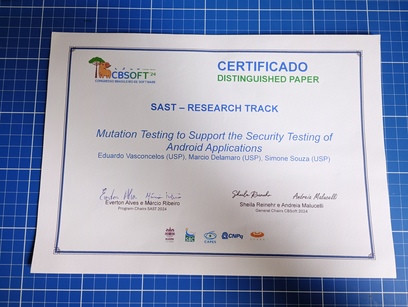

Mutation Testing to Support the Security Testing of Android Applications

Meu artigo Mutation Testing to Support the Security Testing of Android Applications foi publicado e recebeu o prêmio de distinguished paper no CBSOFT'24.
Você pode baixar uma cópia gratuita desse paper diretamente dos seguintes repositórios:
Obs.: a publicação real deste post ocorreu em 18 de março de 2026 …